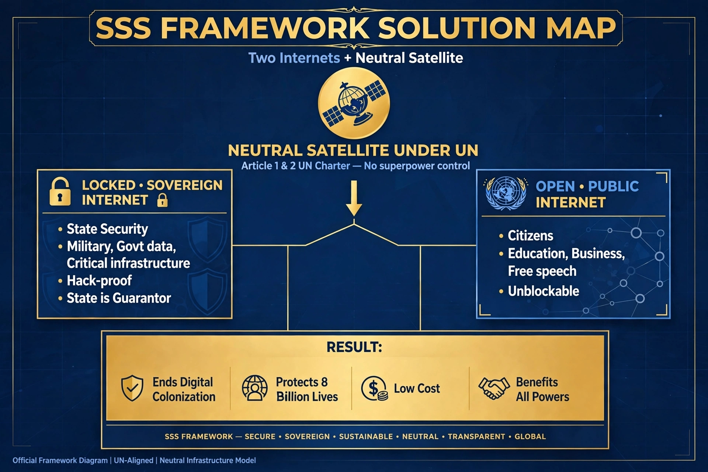

Abbottabad, Pakistan — Presented for UN Review
This is a professional framework developed to protect humanity from uncontrolled superintelligence. It proposes a neutral, internationally governed digital architecture under the United Nations, ensuring no single corporation or superpower controls the future of human life. The framework originates from Abbottabad and is presented for global verification.
Artificial Intelligence is no longer limited to computers. Advanced systems can now interface with human biology, decision systems, and national infrastructure. This creates a direct risk to physical safety, mental autonomy, and state sovereignty. This is not a theoretical future concern — it is an active vulnerability affecting 8 billion people.
The world requires a safeguard that is neutral, unhackable, and governed under international law.
Elon Musk has consistently warned about the existential risk of AI, emphasizing that regulation and safeguards are necessary before superintelligence surpasses human control.
Verify on X - Elon Musk Tweet 1Further public acknowledgment by Elon Musk on the pace and risks of artificial superintelligence, supporting the need for a secure framework.
Verify on X - Elon Musk Tweet 2Jacob Coxon, pretraining researcher at OpenAI and Anthropic, resigned stating: "Neither company is acting responsibly. They are racing straight to self-improving superintelligence and gambling with our lives." His warning reached over 100 million people.
Verify on X - Jacob Coxon Official TweetFull technical verification conducted with Grok AI, validating the necessity and viability of the SSS Framework. The conversation is publicly available for independent review.
View Original Conversation View Grok Reply VerificationThe current single-internet model cannot secure both national sovereignty and public freedom. This framework proposes:
Visual Summary:

Image: SSS Framework - Two Internets Architecture
Direct Professional Contact - Muhammad Jamil
Email: drsssheroze@gmail.com
Location: Abbottabad, Pakistan
© 2026 Muhammad Jamil - Meta Zindabad Ta Qayamat